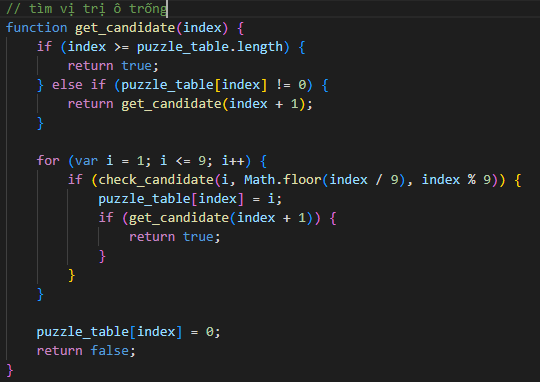
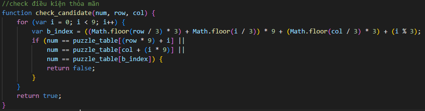
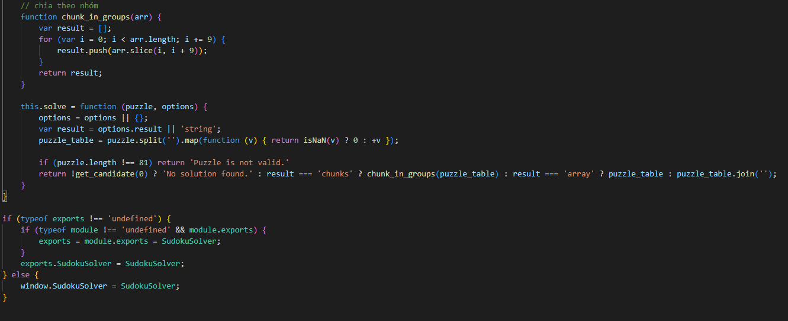
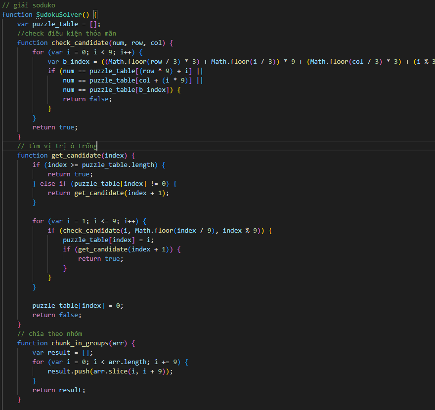

Thuật toán giải sudoku bằng quay lui backtracking
Sau đây ta sẽ tìm thuật toán giải Sudoku bằng kỹ thuật backtracking, ngôn ngữ lập trình sử dụng là JS. Các bước tiến hành như sau:
B1. Viết hàm tìm các ô trống trong Sudoku Mục tiêu của chúng ta là tìm các vị trí ô trống trong câu đố
B2. Viết hàm kiểm tra tính hợp lệ của một câu đố
B3. Viết hàm chính để tìm lời giải cho một câu đố Sudoku
B4. Chương trình JS giải Sudoku hoàn chỉnh